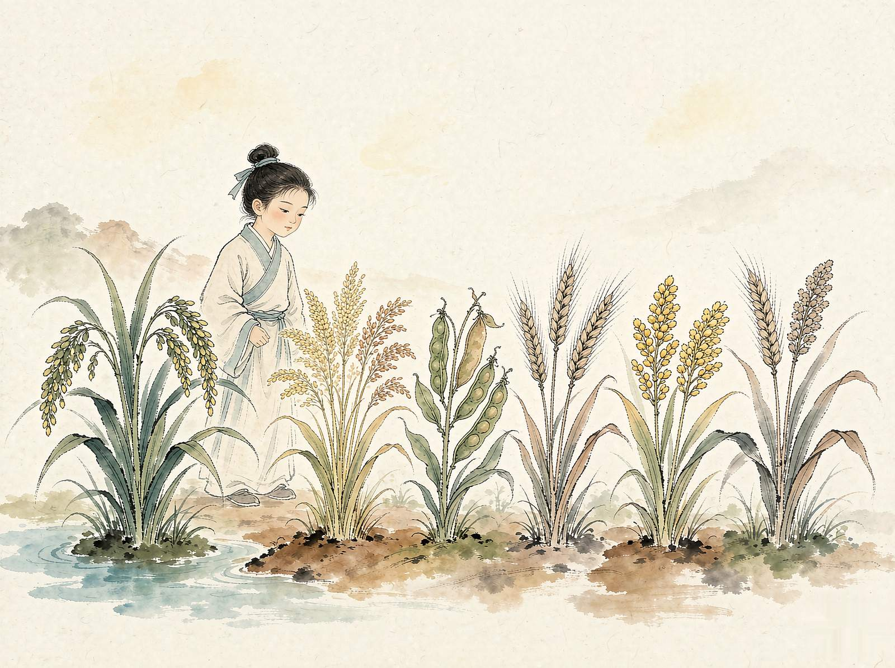
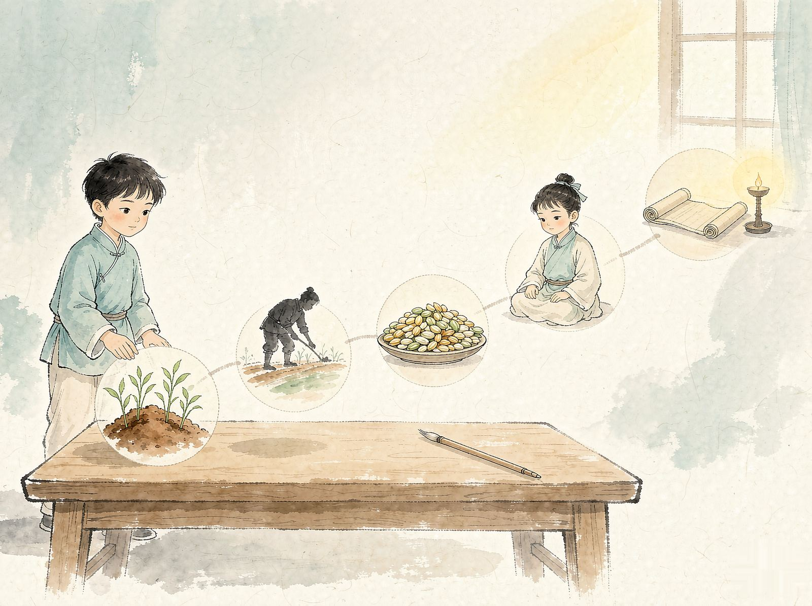

前面我们看见鸟兽虫鱼能够飞翔奔走，在天地间自在往来。
经文转回人间，说起养活我们的谷物：稻、粱、菽、麦、黍、稷，这六样，是古人的主食。
水稻长在水田，小米、麦子、黄米、豆子、稷米长在旱地。

它们同样是大地长出的草木，但是先民学会播种、耕耘、收获，把它们变成粮食，养活一代一代人。
天地生出万物，人取其中合用的，滋养身体。身体安稳，才有空间去学仁义、修本心。

落到心上理解：谷物也是草木一相，荣枯生灭，同循造化。区别在于：其余草木任其自然生灭，五谷经由人的劳作，转化为滋养色身的因缘。身是载道之器，衣食安稳才是修心观照的基础；但不可执着口腹之味，把滋养当成追逐享乐的目标。
一心追逐美食滋味，不断放大食欲，被饮食牵绊；视五谷为理所当然，不见耕耘、天地造化之功。
明了粮食只是滋养色身的资具，安身之后，重心向内修德；懂得一粥一饭，皆是天地因缘与人的劳作和合而成。
一、勘俗见。很多解读只做识字，认六种粮食。全书脉络里，这是一个重要转折：从天地万物之象，落回到人的色身资养，是「三才」中人的立足根基。
二、现代对照。可以带孩子认识主食，体会食物来之不易，建立惜福之心；引申：物质供给是基础，但不是生命的终极追求。
三、承接常变主线。谷物品种、种植方式随时代演变，是可变之相；「资养色身，承载修持」这个功用不变，是常。
四、承接教与学二分。家长引导孩子感恩水土劳作、爱惜粮食，属施教一侧；孩子慢慢分清「需要滋养」和「贪求美味」，是自主修习。
接上选择力练习：谷以养身，身以载心，不令口腹主宰本心。
六谷，是华夏农耕文明的根本资粮。稻水生，其余五谷陆生；水土阴阳和合，谷实乃成。
粱，旧说为粟之精者；稷，为谷之长，旧注有粟、高粱、穄诸说。二者所指有重叠，历代注家亦不统一，此处并存，不强行分判。菽为豆类总称，麦为大小麦，黍为黏黄米。
全句释义：天地化生草木，其中稻、粱、菽、麦、黍、稷六类谷物，经先民耕植收获，用以滋养人身。由广观万物，收束到人赖以存续的资粮，建立「色身—德行」的次第根基。
二 · 命题考辨（一）六谷的两层义涵。第一层，造化层面：五谷同是地生草木，和野草、杂树同源，无高下本相；只是因缘不同，被人驯化，成为养命之材。第二层，人伦次第：身不安则道不立。儒家讲先养后教，和般若修行「依此色身而修」相通。这个身体，是五蕴和合之身，也是我们观照、修持的依托。没有资养，色身衰损，修学无从谈起；但若困在食味、贪欲之中，又会被外缘绑缚。这是中道。
（二）粱稷何以并称。《尔雅》有「粱，粟」之说，稷亦被训为粟、为穄、为高粱，说各不同。经文并列粱、稷，重在列谷之目，不在考订物种；若以今日植物学一一对号，反失古人之意。
（三）对照当下现代语境。现代农业育种、耕作、储运，形态、技术早已大变；但底层逻辑不变：生命需要物质滋养。现代的误区，恰是两端：一端轻视身体滋养、空谈心性；一端不断刺激食欲、消费欲望，把饮食变成享乐竞赛。经文放在此处，恰好校准次第：食为资具，不是目的。
（四）般若范式互参。六谷、滋味、色身，皆是缘起假名。联动空杯模型：虚空自性为本体，水土、时节、人力是外缘，禾谷、滋养之效是缘起显现。谷物可以养身，却不是自性本身；色身借谷物维系，色身同样是缘起之相。
呼应「本乎数」：六谷取六之数，对应六合、六爻；数字只是归类标识，不必执着六谷为定数。
（五）延伸义理。《金刚经》讲菩萨布施、度生，亦不离饮食资养，但是不住饮食之相。道家讲「食气者寿」，但基础教法，依然承认稼穑养身的现实次第。此句安插在这里，承接万物生化，点明：一切天地生机，最终和我们这个五蕴之身相连。
三 · 跨典互参《道德经》：「治人事天，莫若啬。」稼穑本身，就是啬养、惜生的示范。
《庄子·马蹄》：「织而衣，耕而食，是谓同德。」耕织自足，同得天地之德；先明稼穑之德，方知何为不贪、何为俭。
串联前文：前面遍举山河、四时、草木、鸟兽，向外撑开造化格局；到此向内收，落到人的色身资养，为人伦、五常、修持托底。
四 · 与前后课的张力呼应「人不学，不知义」：义在于明先后次第，先养身，后修德，不做空谈心性的偏执。
呼应「玉不琢，不成器」：打磨自心，就是在饮食日用之中，守住分寸，不被滋味贪欲牵引。
呼应「教之道，贵以专」：见闻之学，由天地万物落回日用衣食，在最朴素的稼穑之中体会大道。
次第链条继续延伸：…… → 此动物，能飞走 → 本课
一、同样是草木，为何独取六谷为养命主食，造化是否有偏向？
二、修行之中，节食、辟谷，和「谷以养身」的次第如何平衡？
三、惜福、节俭，会不会滑入自我苛待？中道边界何在？